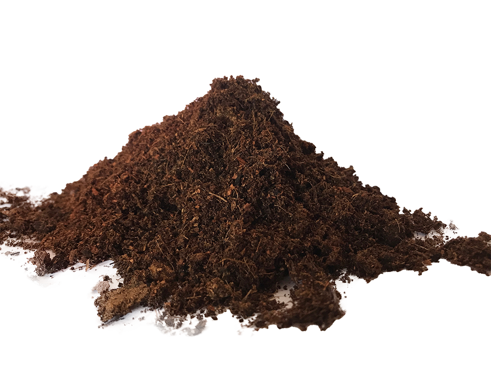
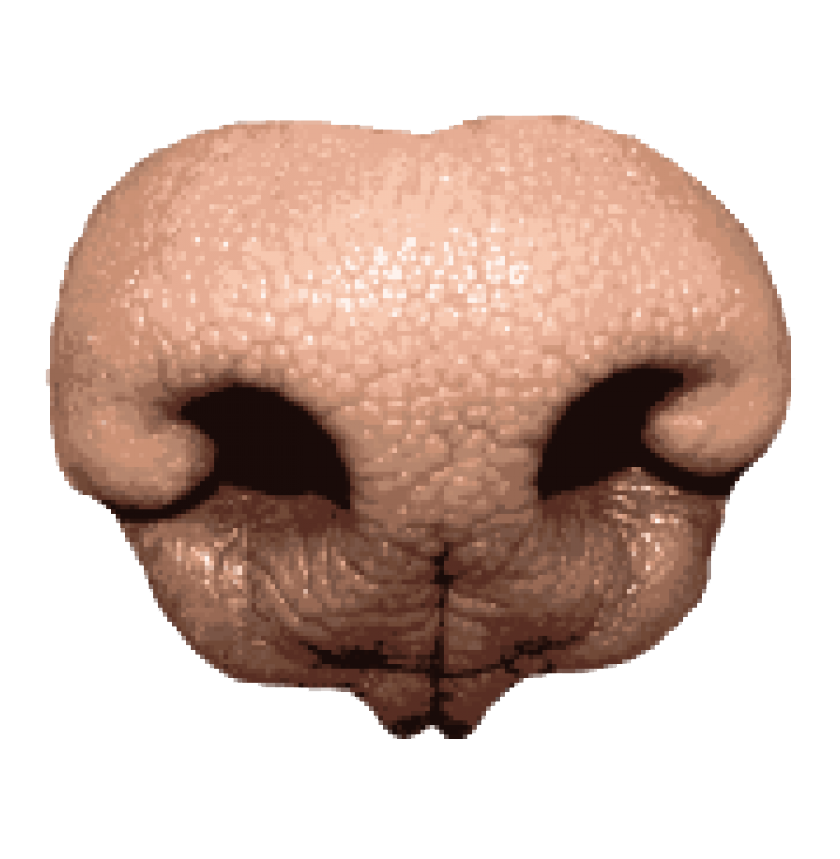

CORNEA
CORNEA Eyes are organs which provide vision.
 PINK CLIP
PINK CLIP This specific clip can hold together different types of lifeforms.
 RAINBOW OCTOPUS
RAINBOW OCTOPUS An octopus has three hearts, nine brains, blue blood and well-developed vision. In both laboratory and ocean settings, the octopus is known to recognize faces.
 BOULEDOGUE FRANÇAIS
BOULEDOGUE FRANÇAIS The best cyborgs offer a way out from the duality of man and woman, human and animal, human and machine. Dogs are good creatures to begin this merge with.

SOIL
Soil serves as a perfect habitat for newly born being formed of love and respect
for otherness and difference.
Soil serves as a perfect habitat for newly born being formed of love and respect
for otherness and difference.
 FIRE
FIRE It is our inner light as well as a living symbol of the Divine fire that burns in every soul.
 HOLE PUNCHER
HOLE PUNCHER This machine punches round holes in leather, plastic, rubber, but also more lively elements. Simple and effective for perfect round shapes.
 CHROMODORIS GEMINUS
CHROMODORIS GEMINUS Bright colors serve as a warning to other animals of the sea slug's toxic stinging cells or offensive taste. Excellent starter pack for self-moving, self-designing, autonomous cyborgs.

CANINE'S NOSE
The structure of the nose is the secret to its amazing ability to detect and understand smells.
The structure of the nose is the secret to its amazing ability to detect and understand smells.
 TARDIGRADE
TARDIGRADE Tardigrades are among the most resilient animals known. This species is able to survive extreme temperatures, air deprivation, radiation, dehydration, and starvation — that would quickly kill most other known forms of life.
 MUSCULAR ORGAN
MUSCULAR ORGAN Tongue helps you to swallow and digest the posthumanist idea of cybernetic organisms.
DRILLING MACHINE
Drilling is a cutting process that uses a drill bit to cut a hole in the patriarchal concept of gender.
Drilling is a cutting process that uses a drill bit to cut a hole in the patriarchal concept of gender.
DRAG AND DROP THREE
INGREDIENTS ONTO
THE PLATE
COOK
Cooking With Soul is a project which was created in respond to the Donna Haraway's "A Cyborg Manifesto: Science, Technology, and Socialist-Feminism in the Late Twentieth Century". Our journey resulted in a livestream event on twitch.tv where we explored the physical act of cooking guided by a performative
reading based on Donna Haraway's words. This website serves as digital extension of our cooking show. We show you different qualities each element contains and the possibilities when it comes to merging them. When the cooking is done, an informative surprises await. We hope you enjoy our and your own cooking session because a lot of undiscovered connections and hyperlinks lie just beyond our imaginations.
reading based on Donna Haraway's words. This website serves as digital extension of our cooking show. We show you different qualities each element contains and the possibilities when it comes to merging them. When the cooking is done, an informative surprises await. We hope you enjoy our and your own cooking session because a lot of undiscovered connections and hyperlinks lie just beyond our imaginations.
Website design:
Paulina Trzeciak
Ro Antia
Fleurine Brijker
December 2020, the Netherlands
Royal Academy of Art (KABK)
Interactive Media Design and Coding class with Hannes Bernard and Martijn de Heer
Made for educational purpose.
Typeface Suisse Int'l 'Medium' by Swiss Typefaces.
Paulina Trzeciak
Ro Antia
Fleurine Brijker
December 2020, the Netherlands
Royal Academy of Art (KABK)
Interactive Media Design and Coding class with Hannes Bernard and Martijn de Heer
Made for educational purpose.
Typeface Suisse Int'l 'Medium' by Swiss Typefaces.